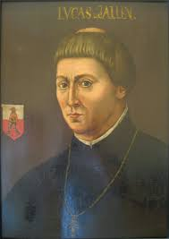

Troszkę o Mikołaju Koperniku
Cześć to ja Mikołaj Kopernik Oprowadzę cię po szlaku na temat mojego życia. Po prostu klilnij ten guzik po prawej by doweidzieć się więcej.
Toruń
Od czego powininem zacząć? A tak. Urodziłem się w Toruniu 19 lutego 1473 roku i byłem tym najmłodszym z czworga dzieci kupca Mikołaja i Barbary Watzenrote. Ogulnie miałęm dwie siostry i jednego brata. Ten dom po prawje to mój pierwszy dom tam się urodziłem i żyłem przez jakiś czas. Potem przeporwadziłem się do tak zwanej Kamienicy Lazurowej. W toruniu chodziłem do szkoły parafialnej przy kościele św. Janów w Toruniu i to włąśnie tam zaczołem się uczyć. Gdy Miałem 10 lat mój ojciec zmarł i zaopiekował się mną wujek Łukasz Watzenrote
Kraków
Dzięki niemu (wujkowi) w 1491 dostałem się na uniwersytet Jagieloński w Krakowie gdzie uczyłem się fizolofi, matematyki, fizyki i astronomi. Nie uczyłem się tam sam lecz z bratem Andrzejem. Bardzo sobie cenię naukę na tej uczelni, poniewarz bardzo pomogł mi to napisać moje słynne dzieło "O obrotach sfer niebieskich". W tedy też zaczołęm myśleć o wadach systemu geocentrcznego, co utwfierdziłó mnie w przekonaniu, żę muszę obserwować kosmos. Uczyłem się t am 4 lata i chciałęm skończyć te studia bez rzadnego tytułu poniewarz utrudniłó by mi to dostanie się na uniewersytety we Włoszech
Bolonia
Znowu dzięki staranim mojego wujka Łukasza Po studiach w Krakowie pojechałęm do Boloni we Włoszech by studiować prawo. Chodziłem do słynnego universytu gdzie mój wuj Łukasz Watzenrodeczęsto zdobył tu stopień doktora prawa kanoń nicznego. Mieszkałęm blisko San Salvatore, gdzie były katedry astrologi i matematyki. Na początku 1497(w tym roku zaczołem studia) roku wpisałęm się do nimieckiej nacji jurystów, która skupiałą się n prawach terytorialnych młódzież takich jak: Polaków, Czechów, Duńczyków, Węgrów, i Litwinóch, którzy posługiwali się językiem Niemieckim. Zdobyłem tytuł magistra sztuk wyzwolonych i doskonale znałęm greke.
Rzym i studia w Padwie
Gdy papież Aleksander VI ogłosił uroczystości jubileuszowe w 1498 r. ja i mój brat Adam udaliśmy się tam by uczestniczycz w mszy która odbyła się w niedziele wielkanocną. 1501 to był rok, w którym skończyłęm przerwe od nauki i zaczołęm studiować medycyne w Padiwe. Skupiłem się w tedy na poznawaniu anatomi luckiego ciałą oraz uczenia się włąściwości ziół leczniczych. W raz z innymi studentami chodziliśmy do domów chorych oraz oglądaliśmy sekcje zwłok.
Powót do Polski i lidzbark Warmiński
Zdjęcię przedstawia Łukasza Watzenrote
Wróciłem do Polski listopadzei 1503 roku i prez pare następnych lat towarzyszyłem mojemu wujowi, był biskupem Warmińskim. Cztery lata po powrocie dopolski zostałęm wysłany na stałę do Lidzbarka gdzie zajmowałem się sprawami adyministracyjnymi i dyplomatycznymi. Nie miałęm zbyt dużo czasu ani na astronomie ani na inne przedmioty nałkowe, jeżeli dobrze pamiętam dużo czytałem. Nideługo do przeyjechania do lidzbaraka wuj Łukasz chciał by ktoś z nas Andrzeja lub Mnie objoł biskupstwo, lecz mój brat zachorował i wyjechał więc zostałem tylko ja. Postanowiłem odmowić i zająć się karierą naukową. Tak mocno pokuciłem się z Łukaszem, że w 1510 roku wyjechałęm do Fromborka.
Frombork
Gdy przyjecahłem do Fromborak nikt nie podzielał mojego zainteresowania do astronmi, lecz byłem znany z zawodu lekarza i ekonomisty. Zajołem się w tedy obserwacją nieba. Wtedy włąśnie stworzyłem słynną teorie heliocentryczną. Pierwszy raz moje zapiski miały być wydrukowane w 1535 roku. lecz przez nieoczekiwane okoliczności to sie nie udało. Pogłóska o mojej teori dotarły do Wittenbergi gdzei Jerzey Reteryk, który był profesorem matematyki zaczoł się nią interesować. Przyjechał on do Fromborak, gdzie był moim studentem przez 2 lata. Wreszczie pierwsze wydanie mojego dziełą De libris revolutionum Copernici narratio prima został wydany dopiero w 1540 roku w Gdańsku
Zakończenie
Pod koniec 1542 roku dostałem wylewu krwi do muzgu co poskutkowało paralirzem prawj części ciała. Pięć miesięcy pużniej już się nie obudziłęm. Pewnie dziwici się, że możecie teraz tego słuchać, ale to nie prawdziwy ja tylko wiadomość kturą zostawiłęm przed śmiercią a teraz muszę się z wami porzegnać bo muszę się obrucić w grobie, który leży w Bazylice archikatedralnej Wniebowzięcia Najświętszej Maryi Panny i św. Andrzeja we Fromborku
I dalej w kosmos